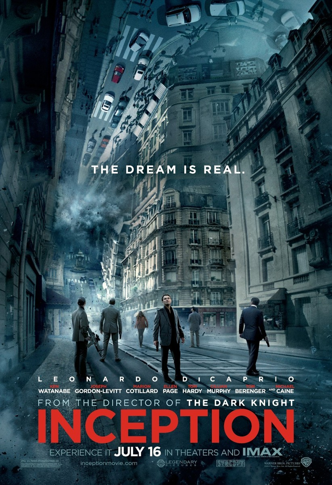
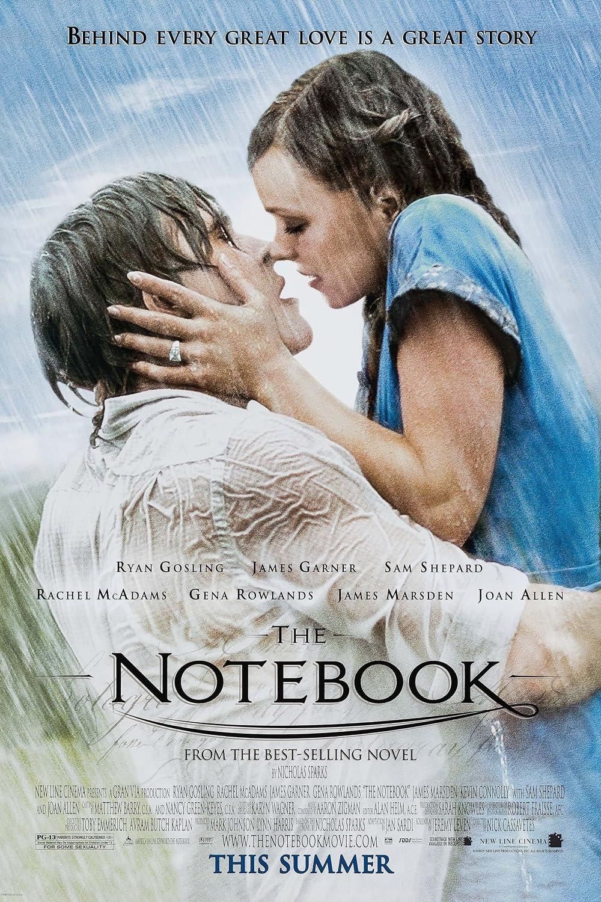
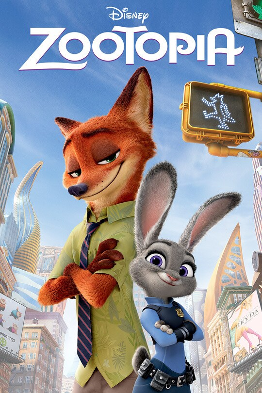
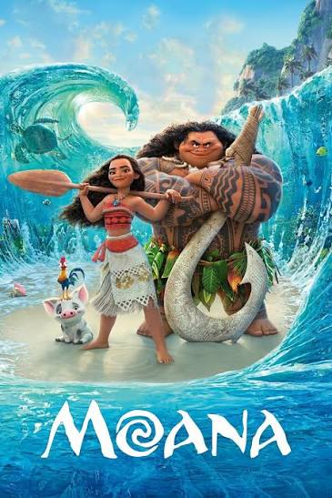
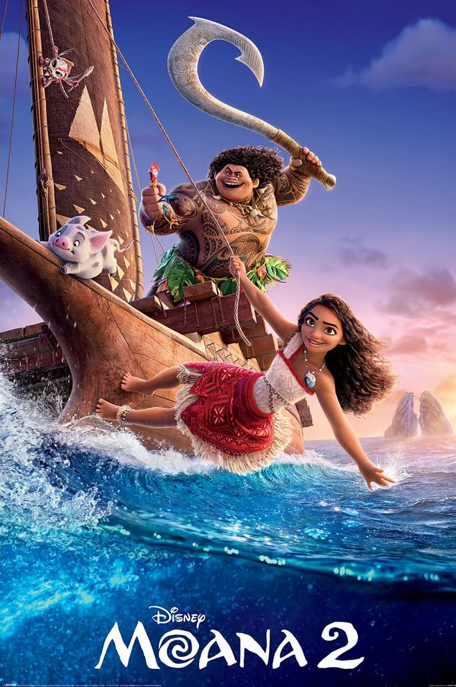

הסרטים המומלצים שלנו
ברוכים הבאים ל- MovieBox .כאן תמצאו סרטים שכדאי לראות - עם תקציר, ז'אנר ודירוג

התחלה (inception)
שנה: 2010
זאנר: מדע בדיוני, פעולה
דירוג: ⭐8.8
גנב מיוחד נכנס לחלומות של אנשים כדי לגנוב סודות. הפעם הוא מקבל משימה הפוכה: לשתול רעיון.
לעמוד הסרט ב-IMDB
המחברת (the-notebook)
שנה: 2004
זאנר: דרמה רומנטית
דירוג: ⭐ 7.8
גבר קשיש מקריא לאישה הסובלת מדמנציה את סיפורם של שני אוהבים צעירים, שרומן האהבה שלהם עומד בפני סכנה בשל הפער במעמדם החברתי.
לעמוד הסרט ב-IMDB
זוטרופוליס (zootopia)
שנה: 2016
זאנר: אנימציה, קומדיית פעולה
דירוג: ⭐ 8.0
בעיר המאוכלסת בחיות בעלות תכונות אנושיות, שוטרת ארנבת מתחילה ושועל נוכל וציני נאלצים לשתף פעולה כדי לחשוף מזימה.
לעמוד הסרט ב-IMDB
מואנה (moana)
שנה: 2016
זאנר: מדע בדיוני, פעולה
דירוג: ⭐7.6
בפולינזיה העתיקה, כאשר קללה נוראה שנגרמה על ידי חצי-האל מאווי מגיעה לאי של מואנה, היא נענית לקריאתו של האוקיינוס ויוצאת לחפש את מאווי כדי לתקן את המצב.
לעמוד הסרט ב-IMDB
מואנה 2 (moana2)
שנה: 2024
זאנר: אנימציה, הרפתקאות, פנטזיה
דירוג: ⭐ 6.3
לאחר שקיבלה קריאה בלתי צפויה מאבותיה נווטי הים על מואנה לצאת למסע אל עבר הימים הרחוקים של אוקיאניה, אל תוך מים מסוכנים שנשכחו זה מכבר, להרפתקה שאין דומה לה מכל מה שחוותה בעבר.
לעמוד הסרט ב-IMDB